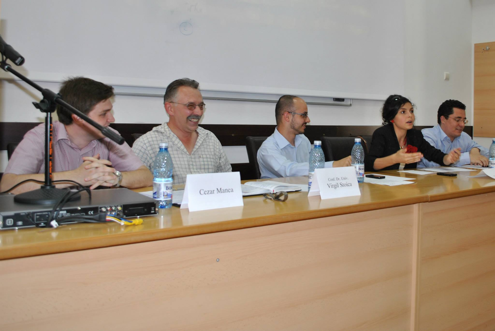

Data: 9 Iulie 2013
Locul: Iași
Moțiunea: E timpul ca amenzile să fie proporționale cu veniturile?
Moderator: Liviu Gajora
Afirmatori: Ștefana Popa, Asist. Dr. Horia Țiț
Negatori: Cezar Manea, Conf. Dr. Virgil Stoica

Liviu Gajora: Dezbaterea publică din cadrul fiecărei runde urmărește să discute, să aducă în prim plan, aceeași temă din runda online. În cazul nostru această temă este „E timpul ca amenzile să fie proporționale cu veniturile?” În tabăra afirmatoare, în tabăra care susține moțiunea avem astăzi o echipă formată din domnul Horia Țiț și Ștefana Popa și de partea cealaltă, în echipa care se va opune moțiunii, avem o echipă formată din domnul Virgil Stoica și Cezar Manea. E o încercare și un pariu al dezbaterilor pe care le facem încercarea asta de a avea echipe mixte, dintr-o persoană cu o anumită expertiză, fie în domeniul specific, fie în domeniul general al moțiunii și dintr-un participant în rundă, fie elev, fie student.
Modul în care derulăm de obicei dezbaterea mai include o componentă, și aceea este un vot. De fapt un vot dublu, unul la început și unul la final. O să o rog pe Andreea să ne ajute un pic. De obicei aveam niște aparate de vot electronic, dar am zis să ne întoarcem la lucrurile de bază. Așa încât o să o rog pe Andreea să împartă aceste bilețele pe care o să vă rog să dați un un vot, cum îi spunem noi, un vot în blanc. Care este poziția față de moțiune în acest moment, fără să intervenim noi în niciun fel.
Pentru începutul dezbaterii fiecare din invitați o să ofere un discurs pro sau contra, urmând ca în partea a doua să încercăm un fel de dialog cu sala, dacă veți avea comentarii, pe care le veți – să spunem așa – acumula pe parcursul dezbaterii, sau întrebări specifice legate de un aspect sau altul... să încercăm să dezvoltăm multe dintre lucrurile pe care acuma încercăm să le punem într-un sistem oarecum adversarial ca să scoatem la iveală cât mai multe idei. Așa încât, dăm cuvântul primului vorbitor din echipa pro moțiunii pentru un discurs de cinci minute.
Ștefana Popa: În drum spre dezbatere am încercat să număr: cam de câte ori trec oamenii pe roșu? Așa, numai cât am trecut eu de acasă până la universitate. Ca să vezi: nu mi-au ajuns cele zece degete de la o mână. Haideți să vedem cum a fost posibil acest lucru și să vedem dacă sistemul actual își îndeplinește scopul pentru care a fost creat. În acest sens, vrem să definim întâi „proporțional” ca fiind un sistem care să crească progresiv ca procent, în raport cu venitul celui care încalcă legea. Ca să dau un exemplu, în cazul în care am un salariu X, voi primi ca amendă 2% din salariul meu. În momentul în care am un salariu mai mare, 2X, să zicem, amenda va fi de 3% din venitul meu. Acum, în acest sens, avem două argumente care să susțină moțiunea. Primul privește rolul amenzii și cât este el îndeplinit în sistemul actual, iar al doilea privește echitatea vizavi de cetățeni.
Primul argument: care ar fi rolul amenzii? Ei bine, noi am identificat două scopuri pe care amenda ar trebui să le aibă: (1) punitiv, acela de a te pedepsi pentru faptul că ai încălcat legea, și al doilea, educativ, scopul de a preveni, până la urmă, încălcarea legii. Și haideți să vedem cum sunt îndeplinite aceste două țeluri la momentul actual. Ei bine, noi considerăm că scopul punitiv al amenzii nu este foarte bine atins în cazul sistemului actual în raport cu persoanele care au un venit mai ridicat. De ce? Să luăm un exemplu simplu: o persoană cu un venit de zece milioane, în momentul în care primește o amendă de un milion, are de suferit mult mai mult decât o persoană care primește aceeași amendă dintr-un venit de o sută de milioane. Și astfel, efectul punitiv nu se obține, acea persoană putând neglija amenda până la urmă, deoarece aceasta nu o afectează la fel precum pe persoanele cu un venit mai scăzut.
Ok, de ce considerăm noi că un sistem proporțional ar duce la obținerea acestui efect punitiv? Ei bine, în momentul în care sistemul ar fi proporțional, amenda ar crește în raport cu venitul persoanei. Practic, o persoană care are o sută de milioane nu va mai plăti aceeași amendă pe care o primește o persoană cu zece milioane, pentru că până la urmă nu amenda este cea care contează, ci efectul ei, efectul obținut prin amendarea individului. Iar crescând amenda, cu siguranță efectul va fi mult mai dramatic și în cazul persoanelor care au venituri mai ridicate.
Iar apoi, legat de efectul educativ, aici trebuie să privim presiunea pe care o pune amenda în momentul în care avem de ales dacă să încălcăm legea sau nu. Ei bine, noi considerăm că în momentul actual, dacă ai un venit ridicat, presiunea pusă asupra ta nu este mare. Cu siguranță noi considerăm, sau cei mai mulți ne gândim la faptul că, dacă avem o amendă mai mare, tindem să o evităm, însă nu este așa, pentru că în momentul în care avem o presiune mai mare asupra noastră, tindem să ne gândim de două ori dacă să alegem să încălcăm legea sau nu. De aceea considerăm că efectul educativ va fi obținut. Scopul nostru, ceea ce dorim noi până la urmă în această dezbatere, este să menținem ordinea socială, pentru că aceasta este cea care menține existența unei societăți, este cea care face posibilă coexistența noastră.
Iar legat de cel de-al doilea nostru argument, de echitatea față de cetățeni, ei bine, noi considerăm că egalitatea nu există decât în numere. Numai acolo, în cifre, poate exista egalitate. În viața de zi cu zi există variabile, nu lucrăm cu constante. Iar faptul că la momentul actual sistemul judecă persoanele în mod egal, noi considerăm că este greșit, pentru că, până la urmă, dacă dorim să pedepsim o persoană, trebuie să ținem cont și de circumstanțele personale, nu doar de factorii generali. De aceea considerăm că, la momentul actual, echitatea nu poate fi obținută, datorită faptului că... nu poate fi obținută. Mulțumesc.
Liviu Gajora: Mulțumim, Ștefana. O să invităm acum pe oricine din echipa contra să adreseze întrebări Ștefanei, dar și colegului său, vreme de 3 minute, legate de discursul pe care tocmai l-au auzit, sau legate de lucruri pe care poate nu le-au spus dar care țin de moțiunea noastră.
Virgil Stoica: Am o întrebare legată probabil de ultimele fraze pe care le-a spus domnișoara. Ați anunțat argumentul echității la început și la sfârșit, dar ați vorbit despre egalitate, că nu suntem egali. Sunt doi termeni echivalenți?
Horia Țiț: Fără îndoială că nu vorbim despre două concepte sinonime. De fapt, noțiunea de egalitate la care s-a referit colega mea mergea mai mult spre ideea de egalitarism. Nu avem, prin sistemul existent la momentul de față, premisele unei egalități reale în fața legii. La momentul de față există acest soi de egalitarism care neglijează ceea ce am putea numi anumite circumstanțe individuale în momentul în care se aplică o sancțiune. Sancțiunea este aceeași, sau este foarte apropiată, pentru o categorie foarte mare de persoane. Ori, ceea ce determină acest lucru este o inechitate, și lucrurile sunt legate de argumentul 1 pe care noi l-am prezentat, de cele două efecte pe care ar trebui să le producă sancțiunea. În momentul în care persoana știe că există presiunea unei anumite sancțiuni, de o anumită gravitate, s-ar putea să reacționeze altfel decât în momentul în care știe că pentru el sancțiunea este mult mai redusă decât pentru altul, în mod real, raportat la circumstanțele sale individuale. Deci ceea ce noi urmărim este nu neapărat sancționarea individului. Sigur că faptele privite individual poate sunt aceleași sau sunt asemănătoare. Ceea ce urmărim este ca modul în care sancțiunea se răsfrânge asupra individului să pornească de la aceleași premise, urmărind a se obține aceleași rezultate.
Virgil Stoica: Asta însemnând că este echitabil sau că este egal?
Horia Țiț: Asta însemnând că trebuie să fie echitabil.
Virgil Stoica: Legat de rolul educativ al amenzii, cum considerați că se aplică educația luată de o amendă? Se aplică doar celui care o primește, sau se aplică tuturor celor care ar putea să ajungă să ia o amendă vreodată? Adică ce-ar putea să învețe un tânăr în momentul în care știe că îl așteaptă o viață în care știe că cu cât o să câștige mai mult, cu atât o să fie pedepsit mai tare?
Ștefana Popa: De aia am făcut această împărțire. Efectul punitiv vorbește despre o acțiune trecută, vorbește de ceva ce s-a întâmplat. Însă efectul educativ vizează ceva ce s-ar putea întâmpla în viitor, deci prevenția, până la urmă. Și nu, scopul nostru nu este de a-i împiedica pe tineri să se îmbogățească, în niciun caz, ci de a-i face pe aceștia să se îmbogățească, însă cu respectul cuvenit, totodată, legii.
Liviu Gajora: O să ne oprim aici și o să facem și de partea negatoare o structură similară: o să avem întâi un discurs din partea primului vorbitor și apoi o să avem întrebări din partea echipei pro. Aș vrea să îl invit pe Cezar.
Cezar Manea: Bună ziua doamnelor și domnilor. Astăzi vom nega moțiunea și vom demonstra de ce, atât la nivel de justificare, cât mai ales la nivel de practicabilitate, moțiunea nu se justifică a fi implementată. Dacă e să pornim încă de la definiția pe care ne-au dat-o Guvernul astăzi, legată de proporționalitate, și anume ca amenzile să fie proporționale cu veniturile. Ei bine, am să vă prezint o statistică foarte interesantă, și anume: 40% dintre cei mai bogați români din România primesc ajutor social. De ce? Tocmai pentru că cei mai bogați români de la noi din țară au cele mai mici venituri declarate. Și asta este o problemă cu care ne confruntăm în zilele noastre și nu este o problemă doar la noi în țară, ci este o problemă răspândită în foarte multe state – faptul că avem foarte puține venituri declarate, în schimb avem foarte mulți oameni bogați. Deci să spunem că, chiar dacă presupunem că moțiunea ar fi justificată, ea nu ar putea să funcționeze așa cum ar putea dori echipa Guvernului astăzi.
Legat de primul lor argument, legat de rolul amenzii, legat de rolul punitiv și rolul educativ, tocmai aici am vrea să intervenim și noi, și anume să spunem că această amendă proporțională cu venitul va duce la o denaturare a acestui rol punitiv și educativ al amenzii, pentru că oamenii vor înțelege cu totul altceva din respectiva amendă decât ar trebui să se înțeleagă. Practic oamenii vor înțelege că respectiva amendă reprezintă o simplă colectare de taxe și reprezintă o colectare de taxe progresivă, o colectare de taxe care îi vizează în primul rând pe cei bogați și mai puțin pe cei săraci. Și de aceea considerăm că se va ajunge la cazuri în care, spre exemplu, nepurtarea centurii de siguranță va putea fi sancționată în aceeași măsură cu, să spunem, circulația cu 200 Km/h printr-o localitate. Ei bine și aici apare o diferență clară, discrepanță clară, între un pericol social concret pe care-l avem și nepurtarea centurii de siguranță, un lucru să-i spunem irelevant la nivel de pericol social. Și totuși vor fi pedepsite în exact aceeași măsură prin această amendă proporțională, și atunci considerăm că va apărea această discrepanță asupra rolului educativ al amenzii și va apărea o denaturare a scopului amenzii până în final.
De asemenea, legat de presiunea de care ne vorbea echipa Guvernului astăzi, și de evitarea amenzii, să-i spunem, am avea încă un punct de ridicat, și anume că tocmai în momentul în care se va introduce această amendă proporțională, spre exemplu în țările în care măsura este deja implementată, s-a ajuns la amenzi de ordinul sutelor de mii de euro. Ei bine, noi considerăm că în momentul în care apar asemenea amenzi, în momentul în care apar asemenea cifre, considerăm că e mult mai ușor din partea unui om bogat să plătească un proces, să plătească avocați pentru a scăpa de respectiva amendă. Deci din nou apar probleme la nivel de practicabilitate a măsurii, tocmai datorită faptului că procesul în sine, sau a scăpa de o amendă, va fi un lucru mult mai ieftin și mult mai ușor pentru, să spunem, oamenii bogați, oamenii vizați de această moțiune de astăzi, va fi mult mai ușor să scape printr-un proces decât să achite respectiva amendă.
Și de asemenea, legat de ultimul lor argument, legat de chestiunea echității, mă rog, respectiv a egalității, considerăm că această măsură ar aduce doar un fel de echitate sau de egalitate la nivel strict economic și nu ar avea absolut niciun efect la nivelul amenzii, la nivelul scopului amenzii în sine. Da, poate ar trebui să facem o dezbatere dacă ar trebui să punem o impozitare progresivă a bogaților, dar considerăm că acest lucru nu ar trebui să fie făcut prin intermediul amenzilor.
De asemenea, considerăm că o consecință foarte gravă, argumentul nostru propriu, o consecință foarte gravă a acestei măsuri, reprezintă norma de amenzi care în momentul de față există. La Circulație există normă de amenzi pe care polițiștii trebuie să o îndeplinească în fiecare lună. Chiar dacă nu există în lege, ea este recunoscută chiar de înalți comisari din Poliția Română, și chiar a vrut să fie introdusă prin lege, hai s-o facem pe față, totuși. Și considerăm că această normă de amenzi, tocmai, va crea un efect contrar a ceea ce se întâmplă în momentul de față, și anume vor fi vizați cu preponderență oamenii bogați, vor fi vizați cu preponderență oamenii care au, să-i zicem, mașini scumpe. Și nu ne dorim acest lucru deoarece echipa Guvernului nu ne-a demonstrat astăzi, nu ne-a arătat nicio statistică care să spună că, tocmai, oamenii bogați sunt cei care comit cele mai multe accidente; tocmai, oamenii care au BMW de ultimă clasă sunt cei care accidentează cele mai multe persoane pe stradă. De aceea considerăm că și bogații și săracii reprezintă, până la urma urmei, același grad de pericol social și ar trebui să fie tratați în mod egal în fața legii. Mulțumesc.
Liviu Gajora: Mulțumim și noi și o să invităm de data asta echipa Pro să pună întrebări echipei Negatoare.
Ștefana Popa: O primă întrebare: puteți să-mi spuneți, vă rog, ce înțeleg oamenii în momentul în care plătesc o sută de lei din cei zece mii pe care-i au, în mod repetat, și încalcă legea în mod repetat? Ce înțeleg ei?
Cezar Manea: Înțeleg că, mă rog, au comis o greșeală, dar statisticile ne arată că nu există o diferență, adică nu sunt predispuși să comită mai multe infracțiuni decât oamenii săraci. Faptul că respectiva sumă este, să-i spunem, poate nesemnificativă pentru ei nu însemnă că o să comită același lucru în mod repetat.
Horia Țiț: Aș avea și eu o întrebare: pentru ce se plătesc taxe și impozite?
Cezar: Pentru bugetele...
Virgil Stoica: Pentru asigurarea serviciilor publice.
Horia Țiț: Și pentru ce se plătesc amenzi?
Virgil Stoica: Pentru pedeapsă.
Horia Țiț: Ca o pedeapsă?
Când vorbiți despre pericol social concret, la ce anume vă referiți? La pericolul faptei în sine, sau la consecințele pe care aceasta le-ar avea?
Cezar Manea: Consecințe, la posibilele consecințe. Vorbeam despre nepurtarea centurii de siguranță versus circularea cu o viteză fenomenală pe străzile patriei.
Horia Țiț: Am văzut că ați restrâns la aceste contravenții legate de regimul circulației pe drumurile publice și... bun, într-un fel moțiunea nu-i neapărat despre asta, dar induce spre această arie. Și pentru că ne-ați cerut mai multe date concrete: știți, de exemplu, care este principala cauză a producerii accidentelor mortale anul trecut, în România?
Cezar Manea: Viteza, depășirea în locuri nepermise... Lipsa autostrăzilor, spre exemplu.
Ștefana Popa: Aș avea și eu o întrebare. Legat de corupția pe care ați adus-o în discuție, care este legătura cu sistemul proporțional? Adică, nu cumva corupția are legătură cu orice am încerca să facem, cu orice schimbare am încerca să facem în această țară? Ce legătură are cu...?
Virgil Stoica: Nu... Nu, pentru că atunci când te oprește polițistul și știi că ai de plătit o amendă de 2 milioane de lei sau de 3 milioane de lei, te duci la Circa Financiară și zici niște lucruri, așa, și o plătești. În momentul în care, să spunem că ai o amendă de 300 de milioane de lei, poate că ești dispus să îi dai lui 100 de milioane ca să închidă ochii.
Ștefana Popa: Și cum se obține presiune mai mare, în momentul în care știu că trebuie să îi dau polițistului o mie de lei sau în momentul în care am de plătit zece lei la secție?
Virgil Stoica: Presiune asupra cui?
Ștefana Popa: Asupra celui care poate să comită infracțiunea.
Virgil Stoica: Sigur că presiunea mai mare e când ai de dat o mită mai mare și nu-ți face nicio plăcere. Dar asta înseamnă că faci o economie de 200 de milioane în cazul ăsta.
Liviu Gajora: Zarurile au fost aruncate, cum s-ar zice, ideile sunt deja acolo. O să invităm de data aceasta pe cel de-al doilea membru al echipei care este pro moțiune să continue dezbaterea de partea echipei, domnul Horia Țiț.
Horia Țiț: Bună seara. O să intru abrupt în discuție pentru că, într-adevăr, deși noi n-am făcut vreo restrângere, echipa negatoare s-a axat în a da exemple în special din această sferă, a contravențiilor cu privire la regimul circulației pe drumurile publice, din România.
Cred că raționamentul făcut de negatori astăzi pornește de la o premisă greșită, anume aceea că în mod automat se săvârșesc contravenții. Și atunci dacă tot le săvârșim, cum e mai bine, să avem un sistem bazat pe această proporționalitate între venituri și sancțiune sau o anumită fixitate a acestei sancțiuni? Linia noastră de argumentare pornește tocmai de la ideea că ceea ce urmărim, prin prisma unui anumit concept general pe care noi l-am numit ordine socială, este să scădem numărul faptelor care aduc atingere regulilor adoptate de o societate. Nu pornim de la premisa că există o anumită constanță, așa cum au făcut-o negatorii, asimilând, iată, amenda, cu o taxa sau un impozit. Taxa sau impozitul sunt achitate pentru o anumită activitate, pentru o anumită proprietate, în general sunt aspecte care țin de modul în care societatea funcționează în mod normal. Amenda intervine atunci când societatea nu funcționează în mod normal, atunci când o regulă este încălcată. De aceea trebuie să ne punem problema nu doar acestui efect de a sancționa, pe care aș avea tendința să-l minimizez acum, ci în special pe efectule educativ. Efect educativ care este ambivalent, adică vizează atât persoana făptuitorului, cât și celelalte persoane din societate.
Noi am pornit de la acest concept de ordine socială și am folosit noțiunea de echitate. De ce considerăm că un sistem bazat pe proporționalitate între sancțiuni și venituri ar fi mai echitabil? Din perspectiva a ceea ce a explicat foarte bine colega mea. Din perspectiva, dacă vreți, impulsului pe care o persoană l-ar avea în momentul în care ar comite o faptă prin care ar aduce atingere unor reguli mai mult sau mai puțin importante. În momentul în care știe că sancțiunea este oarecum neglijabilă raportat la veniturile sale, această presiune pe care încălcarea normei o pune este mult mai mică. În momentul în care știe că sancțiunea va fi într-adevăr usturătoare...
Sigur, chestiunea referitoare la corupție e o chestiune care ține de modul în care aplicăm, și oarecum ea excede cadrul dezbaterii. Moțiunea pe care noi o dezbatem astăzi se referă la principiul care ar trebui să stea în spatele unei reglementări, nu la modul în care aplicăm acea reglementare. Nu cred că eliminăm corupția nici într-o variantă, nici în cealaltă, sau nu modul în care reglementăm, repet, această modalitate de stabilire a sancțiunii e cea care determină sau nu corupție. Corupție va exista și într-o situație și-n cealaltă. Problema este de a stabili acest principiu și de a-l face echitabil pentru toți membrii societății.
Și pentru că tot s-a vorbit de România și de aceste contravenții la regimul circulației. La momentul de față, amenzile pentru încălcarea regulilor privind circulația pe drumurile publice sunt stabilite pe baza unor puncte de amendă, stabilite pe baza venitului, a salariului minim brut pe economie. Am avut și eu curiozitatea, că tot ni s-au cerut date concrete, înainte să vin la această dezbatere, să văd o statistică a veniturilor nete și brute din România pe ultimele doisprezece luni. Întâmplător săptămâna trecută Institutul Național de Statistică a publicat un comunicat de presă în care prezenta această statistică. O am în geantă – dacă vreți, putem să o analizăm mai în detaliu. Sunt decalaje foarte mari între salariile - și nete și brute – în funcție de domeniul de activitate. Sunt de în jur de 1000 de euro în domeniul IT-ului, de exemplu, sunt de aproape 200 de euro în domeniul învățământului sau medicinei. Or, cum putem vorbi despre echitate, în condițiile în care aceste venituri variază atât de mult, iar noi stabilim punctul de amendă, în funcție de ce? De venitul minim brut pe economie.
Prin urmare, mecanismul pe care noi l-am propus și pe care îl susținem este acela a realizării unui sistem care să dea o presiune egală tuturor membrilor ai societății atunci când își pun problema dacă să încalce sau nu regula. Dacă această presiune nu este egală, atunci nu avem un sistem echitabil, și în mod automat se creează un decalaj în ordinea socială. Mulțumesc.
Liviu Gajora: Ok, în punctul ăsta nu mai avem întrebări, trecem direct la contraatac, așa că o să invităm pentru cel de-al doilea discurs de partea echipei Contra pe domnul Virgil Stoica.
Virgil Stoica: Da, încep cu sfârșitul. O presiune egală ar însemna că cei care au venituri zero să plătească zero amenzi ca să nu intre în lipsă materială din cauza asta, proporționalitatea cu zero înseamnă zero și anume să nu fie pedepsiți absolut deloc într-o situație asemănătoare.
Eu aș vrea să încep, să fac un pic un pas în spate. Noi dezbatem o moțiune... este timpul pentru introducerea amenzilor proporționale cu venitul. Aș vrea să mă întreb: de ce? Care este problema care se vrea rezolvată printr-o astfel de modificare a politicii publice? Sunt prea multe accidente făcute de oamenii bogați și atunci trebuie să reducem rata acestei infracționalități și introducem amenzi proporționale, ei să facă accidente mai puține din cauza asta, prin măsurile educative, să spunem, sugerate de Guvern? Poate un alt motiv ar putea să fie strângerea mai multor bani la buget, nu știu, Guvernul n-a susținut așa ceva, dar m-am gândit că ar putea să fie un alt motiv. Ar putea să fie motivul echității, care este mai mult decât discutabil, în condițiile în care averea poate fi considerată o circumstanță agravantă a unei infracțiuni, nu știu ce educație se poate face pe așa ceva. Deci averea intră la un loc cu consumul de droguri și de alcool la infracționalitate. Sau ar putea să fie o măsură care mi se pare demnă de un Guvern: câștigarea facilă de capital electoral. Atunci când propui într-o campanie electorală ca cei bogați să plătească mai mult pentru orice, indiferent ce, strângi mai multe voturi pentru că cei care nu sunt foarte bogați, evident sunt mai mulți decât cei care sunt bogați. Ăsta s-ar putea să fie principalul motiv, de fapt, care stă în spatele unei astfel de măsuri care nu face decât să exacerbeze clișee manipulate prin media. Se ia o beizadea de om foarte bogat, se prezintă ce a făcut el cu BMW-ul sau cu Mercedesul lui ultimul răcnet și atunci mesajul este „introduceți amenzi care să-i supere”.
De ce ar excede cadrului dezbaterii modalitatea în care implementăm o astfel de măsură? Nu mi se pare o temă care n-ar trebui să fie în discuția noastră. Pentru că idei frumoase putem avea, putem avea o moțiune despre toată lumea ar trebui să fie fericită și Guvernul ar trebui să aibă grijă de așa ceva. Cum punem în practică așa ceva? Trebuie să ne gândim foarte bine, când promovăm o astfel de idee, cum o punem în practică. Deci polițistul face un proces verbal pe care-l trimite la Secția Financiară, ăia încep să scotocească prin arhivele lor care nu se suprapun electronic cu fizicul și după aia se ajunge într-un anumit timp, luni, ani de zile, eu știu cât de aglomerate sunt secțiile financiare și tribunalele, să ajungă la o decizie în privința asta.
Și iarăși ajungem la o inechitate în privința pedepselor. Cineva care traversează prin loc nepermis va primi poate o amendă mai mare decât cineva care intră pe roșu în intersecție. Nu știu dacă ar trebui ca pedeapsa să fie proporțională cu venitul, sau să fie proporțională cu gravitatea faptei.
Care ar fi consecințele unei astfel de măsuri? Pedepsele nu reduc infracționalitatea, din câte știu eu, cel puțin. Putem introduce pedeapsa cu moartea, n-o să scadă numărul de crime care există în România. Poate încercăm să le tăiem mâna dreaptă, mai avem măsuri d-astea ultra-radicale care se pot face, la hoți, ardem pe rug – n-o să reducem infracționalitatea printr-o astfel de măsură. În schimb, dispare egalitatea în fața legii, un principiu fundamental al statului de drept. Dacă introducem venitul ca pe un criteriu juridic pentru mărirea pedepselor, am putea să-l introducem pentru orice fel de infracțiune care există în Codul Penal. Cineva care este sărac ia un an de închisoare pentru ceva, după aceea cineva care este bogat ia zece ani de închisoare doar pentru faptul că este bogat. Dacă am introdus venitul ca un criteriu pentru sancțiune... Sigur, ar putea să fie și invers. Statisticile să arate că cei săraci sunt mai dispuși la hoție, de exemplu, și atunci creștem pedepse pentru cei săraci atunci când fură ceva, nu? Este absurd, dar ar trebui să fie valabilă reciproca, în ambele direcții.
Dacă introducem venitul, atunci am putea introduce și alte criterii pentru pedeapsă, cel puțin în privința circulației auto. Firmele de asigurări spun: vârsta este un factor determinant. Cu cât ești mai tânăr, cu atât ai șanse mai mari să faci accident. Sancționăm mai tare pe tineri. Genul: bărbații fac mai multe accidente decât femeile, grave cel puțin. Sancționăm pe bărbați mai tare decât pe femei. Starea civilă: cei care sunt căsătoriți sunt mai responsabili, în general. Îi sancționăm mai tare pe cei care nu sunt căsătoriți. Dacă ai copii, iarăși ești și mai responsabil. Deci dacă ești bărbat tânăr, nu ai copii și ești nu ești căsătorit, nu mai zic dacă mai ești și bogat – trebuie să fii ras cu totul.
Liviu Gajora: Și cum e tradițional, de obicei, la dezbateri, o să acordăm șansa pentru a trage concluziile, pentru a încerca să tragă concluziile, câte unui membru din fiecare echipă, fiecare echipă decide cine va ține acest discurs concluziv, și după ce avem aceste două discursuri, unul de partea Afirmatorilor și unul de partea Negatorilor, vom încerca să... sunt convins că în sală deja s-au acumulat niște întrebări, niște gânduri , și imediat după ce avem și discursurile concluzive vom încerca să interacționăm și cu sala. De partea echipei Afirmatoare, pentru două minute.
Horia Țiț: Ați asistat la o dezbatere care, în mare parte, a fost în paralel, din păcate. Respectiv, echipa Afirmatoare a privit moțiunea din perspectiva unei moțiuni de valoare, respectiv a unei moțiuni în care să se pună în discuție un principiu, nu neapărat aplicabilitatea lui. Sigur, dacă am fi discutat despre aplicabilitate, am fi venit cu un alt gen de argumente și ne-am fi referit la criteriile pe care în ultimul discurs Negatorii le-au menționat. Discutăm strict despre chestiunea amenzilor și despre chestiunea veniturilor. Iar din perspectiva acestei moțiuni, noi ca Afirmatori am încercat să vedem care este scopul pe care amenda îl are și modul în care un sistem bazat mai mult sau mai puțin pe proporționalitate îndeplinește sau nu aceste scopuri. Am pornit de la ideea că scopurile nu sunt îndeplinite la momentul de față, pentru că această presiune care există asupra unei persoane, de a respecta legea, este diferită, în funcție de veniturile fiecăruia. Despre asta discutăm: dacă scopul pe care o sancțiune îl are este sau nu îndeplinit. Nu despre modul în care ar trebui să implementăm această măsură, pentru că discuția ar fi cu totul alta, și desigur mult mai amplă. Deci ceea ce noi încercăm să ne gândim este dacă la momentul de față o amendă neproporțională cu venitul este suficient de echitabilă pentru toți potențialii contravenienți, infractori, și așa mai departe, astfel încât acea sancțiune să-și îndeplinească scopul. Mulțumesc.
Liviu Gajora: Și din partea echipei negatoare.
Cezar Manea: Bună ziua din nou. Până la urmă la finalul dezbaterii tragem concluzia că nu putem să atingem niște valori dacă nu le punem într-un anumit context și nu putem să implementăm o măsură dacă nu punem într-un anumit context. Nu am sugerat că trebuie să implementăm această măsură strict în România, dar chiar și așa, la nivel internațional, avem probleme în foarte multe țări, legate de fraudă, legate de declararea veniturilor, legate de mecanismul de implementare al acestui sistem. Asta am vrut să explicăm noi astăzi, faptul că un astfel de sistem, la nivel de practicabilitate ar fi foarte greu de pus în practică, de făcut să funcționeze, să spunem. Bun, până la urmă de partea Guvernului a rămas această idee, de presiune prea mică aplicată asupra oamenilor bogați și da, putem fi de acord cu acest lucru, dar din nou, această presiune mult prea mică aplicată bogaților nu are efecte în realitate, nu se răsfrânge în realitate, nu duce la mai multe accidente sau la un pericol social mai mare cauzat de oamenii bogați decât de către cei săraci. De aceea considerăm că, spre exemplu, cum a spus și domnul profesor, există foarte multe alte criterii care ar putea fi luate în considerare, criterii valabile, criterii statistic dovedite care ar putea contribui la o pedeapsă mai mare sau la o presiune mai mare care ar putea fi aplicate unei anumite categorii, cum ar fi tinerii, cum ar fi cei căsătoriți și așa mai departe. Și ultimul punct al acestei dezbateri, considerăm că până la urmă, în momentul în care această amendă va deveni un fel de colectare de bani, că până la urmă asta o să se-ntâmple, respectivii bani vor intre în bugetele locale și vor umple norma de amenzi a polițiștilor, considerăm că atunci se va denatura scopul amenzii și considerăm că cei săraci vor fi trecuți cu vederea de către Poliție, deoarece în percepția lor nu are absolut niciun scop să îl opresc că-i sărac pentru simplul fapt că n-o să-mi umple norma de amenzi și n-o să cotizeze suficient la bugetul local, deci n-o să-mi fac bine datoria. Mulțumesc.
Liviu Gajora: Mulțumim și noi. O solicit acum din nou pe Andreea să ia pulsul sălii, să vă solicite votul, de data aceasta încercând să dați în principal în funcție de care tabără v-a convins mai mult, sau luând în calcul și modul în care a decurs dezbatere, și dând de data aceasta votul pe moțiune în funcție și de argumentele pe care le-ați auzit, sau în funcție de argumentele pe care nu le-ați auzit.
[…]
Liviu Gajora: Partea cea mai interesantă a dezbaterilor ăstora de obicei este tocmai ce se întâmplă după momentul formal, și anume încercarea de a dezvolta unele dintre ideile astea sau de a clarifica unele dintre ideile respective și de ce unii vorbitori au susținut anumite idei în timpul dezbaterii. Așa că, aș invita pe oricine are o idee de făcut, sau o întrebare...
Intervenție 1: Problema care o dezbateți astăzi nu este nouă. Paradoxal, nu este nouă. Ea a mai apărut înainte, cu mult înainte de ’89, și atunci dintr-o necesitate, pentru că amenzile deveniseră atât de mici încât – ridicol de mici, chiar pentru acele venituri – încât organele de ordine, polițiștii, milițienii, erau ridiculizați pur și simplu. Le dădeau bănuții aceia care nu mai reprezentau nimic în raport cu salariile, erau tratați cu tot soiul de invective, nu se pedepseau atacurile acestea la persoană și atunci s-au hotărât să se mărească amenzile, până la un cuantum când ele să nu mai fie ridiculizate. Acuma, dezbaterile dumneavoastră au fost pro și contra, dacă-s în funcție de venituri sau nu. Bine, pentru un miliardar pare ridicol o amendă chiar și de o sută de euro. Îi aruncă banii polițistului și zice „pa! Te-am pupat din mers, ne mai vedem data viitoare” Se vine și cu contraargumente. Se poate merge ori pe mărirea amenzilor pentru toată lumea, ori mărirea în funcție de venituri și atunci ar fi selectivă, ori se poate merge la jumate: jumătate-jumătate. Și atunci ce spune? De la un anumit venit în sus se pune proporțional cu averea. Și să nu credeți că dacă nu are venituri nu poate fi într-un fel penalizat. Poate fi, au fost penalizați chiar în țări super-democratice, Statele Unite. Când au fost mari personalități puse să măture bulevarde. Scurt, asta este, dacă nu-ți convine, stai doi ani în pușcărie și cu asta basta. Poți să mături bulevardul trei luni de zile, să te vadă toată lumea: te vede pe ecran, poate să te vadă și pe bulevard gratis, fără să mai dea bani, deci problema ar fi o chestie de etică...
Liviu Gajora: E drept, apăruse în dezbatere ideea asta ca importantă... ce facem cu egalitatea în fața legii? Aș întoarce un pic ultima parte și aș întreba: e importantă întotdeauna, sau e un principiu călăuzitor întotdeauna? Ar exista, să spunem, un precedent pentru o moțiune de genul ăsta, în care egalitatea în fața legii nu mai e cea în sens strict, ci...
Intervenție 2: Îmi cer scuze că intervin, dar am văzut asta și în timpul rundelor și n-am văzut-o acuma, deși mă așteptam să apară. Există mai multe tipuri de egalitate. Este egalitatea șanselor și egalitatea rezultatului. Problemă care nu s-a pus în dezbaterea asta, deși, Horia, sincer mă așteptam ca voi, dacă veniți pe o idee, pe o dezbatere de valoare, asta să fie argumentul principal: discutăm de două tipuri diferite de egalitate, iată de ce egalitatea pe care o propunem noi este mai bună. Și dacă nu facem diferența asta, atunci nu putem discuta de lipsă de egalitate, pentru că este tot un fel de egalitate, indiferent dacă amenzile sunt aceleași, sau amenzile sunt diferite. Și atunci, trebuie făcută distincția asta înainte de a purta discuția dacă sau nu legea devine inegală dintr-o dată.
Horia Țiț: Aici, într-adevăr, de asta am făcut la un moment dat afirmația că poate am mers în paralel... Ideea unei moțiuni de această natură ar fi de o discuție oarecum filosofică sau sociologică, nu neapărat juridică. Dacă intrăm în tehnicalități juridice, să spunem așa, sigur că discuția merge într-o cu totul altă direcție, și merge în ideea unor principii de constituționalitate, de organizare a unui stat de drept și așa mai departe. Sigur că, dacă privim din acest punct de vedere, e foarte ușor de contestat un astfel de sistem, pentru că el ar porni, sau ar putea fi acuzat de o discriminare pe criterii de amendă. Și ideea de egalitate în fața legii ar fi contestabilă tocmai pentru că modul în care legea stabilește sancțiunea se bazează pe acest criteriu al averii, sau al veniturilor și așa mai departe.
Discuția totuși ar fi trebuit să fie oarecum alta, sau noi ne-am propus să fie oarecum mai filosofică decât strict tehnică, pornind de la cele două idei pe care le-am exprimat, și probabil distincția pe care tu ai sesizat-o noi am încercat s-o facem vorbind despre echitate și despre egalitate. Adică punând sub semnul întrebării, și de aceea, eu când am răspuns la prima întrebare am introdus un nou termen (nu l-am mai reluat după aia, într-adevăr), acela de egalitarism. Și discuția e cantonată în jurul acestor trei noțiuni: echitate, egalitate, egalitarism. Cât de mult trebuie să meargă o normă în – dacă vreți – intimitatea unei persoane, pentru a face acea persoană să se conformeze ordinii sociale, regulilor generale? Cât de mult privim membrii societății ca indivizi și cât de mult îi privim ca, să zicem, parte a unei comunități? Cât de mult înclinăm balanța într-o parte sau în cealaltă? Asta a fost intenția discuției.
Sigur că dacă mergem în discuții mult mai tehnice, repet, genul de argumente se schimbă total, și într-un fel se răstoarnă și sarcina, și a afirmatorilor, și a negatorilor. N-am încercat să facem acest lucru, poate și timpul e de natură să nu permită o astfel de dezbatere, am încercat să privim ideea de principiu, filosofic la urma urmei, sau ca filosofie socială. Punem în prim plan individul cu toate caracteristicile lui... Sigur, moțiunea se referea strict la venituri, ea poate fi reluată și sub aspectul altor criterii, fără îndoială, dar noi discutam criteriul referitor la venit, și modul în care, folosind aceste criterii, jonglăm spre o direcție sau cealaltă.
Virgil Stoica: Aș vrea să continui idea despre egalitate începută de colegul meu, sigur, discuție infernală. Dar termenul ăsta de egalitate cred că este probabil unul dintre cele mai periculoase care există în spațiul public în momentul de față. Sau nu la moment, există de multă vreme în spațiul public. Pentru că pentru oameni este aproape imposibil să fie egali. Sigur, pot să fie egali în fața legii, sau, teoretic, cel puțin. Afirmativ, normativ, ar trebui să fie egali în fața legii. Doi oameni nu sunt egali. Două triunghiuri pot fi egale în matematică. Dar doi oameni nu sunt egali. Pentru că unul este mai inteligent, unul nu este atât de inteligent, unul este mai frumos, unu-i mai urât, unu-i mai puternic, unu-i mai puțin puternic, suntem absolut inegali. Am putea fi identici. Sigur, dacă cineva împărtășește niște convingeri creștine – suntem absolut identici pentru că suntem creați după chipul și asemănarea lui Dumnezeu. Dar aici se termină egalitatea. Nu avem niciun fel de egalitate și dacă îmi permiteți aș face o foarte mică paranteză.
Căutați, vă rog, o schiță, nu cred că-i nuvelă, a lui Kurt Vonnegut, Kurt Vonnegut Jr; un scriitor de SF american, „Abatorul 5” cred că este romanul lui cel mai cunoscut, cronica cuiva foarte demult, și încerc să vă povestesc în 2 minute, dacă mă lăsați. Suntem în anul două mii nu știu cât, și câteva sute, și amendamentul numărul 17 din Constituția Americană prevede că toți oamenii sunt egali. Și este o instituție care se ocupă de așa ceva. Care se numește Handicapatorul General. Cred că așa se și numește schița, „Handicapatorul General”. Cum se face egalitatea dintre oameni? Cei care sunt mai inteligenți, probabil niște chestii de IQ, li se pun niște – o cască în ureche, care la intervale neregulate, scoate niște sunete absolut fioroase care îi face să-și piardă șirul gândurilor. Deci nu se pot gândi mai mult de 30 de secunde la ceva pentru că sunt cu totul perturbați de accidente auto și explozii care le au în ureche. Dacă văd mai bine decât media, li se pun ochelari opaci ca să nu vadă. Dacă sunt prea frumoși, sunt obligați să pună petice negre pe dinți ca să pară știrbi, eventual nasuri de clovn ca să pară și mai urâți. Dacă sunt prea puternici, le pun tolbe cu greutăți proporționale ca să nu se poată mișca. Toată lumea trebuie să fie la fel de puternică, la fel de inteligentă, la fel de frumoasă. Și sigur, este cineva care se revoltă la un moment dat și vine Handicapatorul General și îi rezolvă problema. Inclusiv părinții lui nu-și dau seama, se uită la televizor – totul se transmite la televizor –, zice „ce-a fost acolo?” după ce avea un sunet de ăsta foarte puternic în cap, tatăl lui zice, „nu știu, a fost ceva emoționant, dar nu-mi mai aduc aminte”. El este împușcat în direct la televizor. Așa se poate atinge egalitatea, în jos, în jos. Pe toți îi aducem la același nivel.
Intervenție 3: Îmi permiteți? Eu sunt de părere contrară dumneavoastră. Și am să argumentez. Dacă ar fi să luăm prima dată, deci ca primă dată pentru o primă infracțiune, putem să-i aducem la condiția de egalitate pe toți cei care greșesc, principiul neintenționalității, deci nu a fost atent; a greșit, fără intenție. Și atunci să acordăm amenda în mod gradual. Deci pentru prima dată, când s-a greșit fără intenție, e o primă dată, îi dai aceeași amendă la oricare care greșește. De-abia la a doua sau la a treia abatere de tipul ăsta într-un anumit interval, ceea ce s-a și practicat, poți să iei în calcul și venitul. De ce? Pentru că, dacă el mai greșește cu rea intenție a doua, a treia oară, a n-a oară, înseamnă că este sfidarea legii, nu mai este o încălcare a legii, neintenționată.
Virgil Stoica: Îmi permiteți? Noi ne învârtim doar în jurul amenzilor. Există și alte tipuri de pedeapsă, care ar fi probabil ciudat să fie proporționale cu veniturile. Suspendarea permisului de conducere, de exemplu, este o pedeapsă care ar putea fi aplicată mult mai ușor și pe perioade mult mai solide de timp ca să descurajeze, știu eu, eventualele excese ale celor...
Horia Țiț: Problema aici este, și îmi cer scuze că intervin peste dumneavoastră, la un moment dat am pus întrebarea... De exemplu, apropo de statistici, principala cauză a accidentelor mortale în București anul trecut a fost traversarea prin loc nepermis. Pietonului n-ai ce să-i confiști.
Virgil Stoica: Dacă-i bogat îi confiști averea.
Horia Țiț: Și nici nu poți să-i suspenzi dreptul de a merge pe stradă. Deci... nu, aici probabil e vorba și de o reacție pe care noi o avem în mod automat. Eu aș vrea totuși să ne întoarcem exact la cadrul moțiunii. Moțiunea se referă la amenzi și la venituri. Despre asta discutăm, nu despre alte sancțiuni. Și nu despre alte criterii în funcție de care am putea, legal sau nu, identifica, să zicem, modul în care stabilim în concret o amendă.
Ștefana Popa: Totuși, este o mică mare diferență între a suspenda carnetul și a da o amendă, pentru că faptul că dau o amendă de 10 lei unui om care are 10 milioane sau 100 de milioane e simțit diferit, deci noi ne raportam la efect. Pe când dacă îmi suspenzi carnetul, clar îl simte toată lumea la fel.
Virgil Stoica: Aveți carnet? Știți cum e să ai mașină și să n-ai carnet?
Ștefana Popa: Păi asta ziceam. E resimțit de toată lumea, că am mai mulți bani, că am mai puțini bani, n-am carnet.
Horia Țiț: Bogatul poate să-și angajeze un șofer și... Problema e și dacă șoferului i se ridică... Dar nu neapărat despre asta e vorba. Și, într-adevăr, tendința este de a lega amenda de circulație pe drumurile publice, parcarea în locuri nepermise, blocat roți și așa mai departe. Nu neapărat asta înseamnă o amendă, și, zic eu, discuția e mult mai conceptuală decât atât, nu faptul că, într-o zi, era o fabulă celebră, cu un lup a mâncat o oaie... Tendința este de a restrânge moțiunea, dar eu zic că ar fi mai frumos și mai interesant să o extindem la o anumită idee de politică socială, într-adevăr, la modul în care stabilim anumite sancțiuni; că sunt amenzi, că sunt alte sancțiuni, adecvate sau nu, modul în care le raportăm la un anumit criteriu. Și astăzi, criteriul este cel al veniturilor. Aici ar trebui să discutăm.
Intervenție 4: Bună ziua. Nu vreau să intru în chestiuni de tehnică juridică, însă cred că esența discuției de astăzi o reprezintă problema socială la care Statul își propune să ofere o soluție prin reglementarea juridică. Avem o problemă, un pericol social creat. Luăm exemplu circulația pe drumurile publice. Care conduită ar pune în pericol siguranța participanților la trafic? Și atunci Statul vine și încearcă, în măsura în care poate, să reglementeze un sistem de norme care să protejeze cetățenii. Resping din start diferențierea dumneavoastră între bogați și săraci. Este, din punctul meu de vedere, și luați-o ca pe o părere personală, este un argument fals. Nu discutăm despre bogați și despre săraci, ci discutăm despre modul în care o anumită sancțiune este în măsură să forțeze individul să respecte acea normă juridică. Resping din start și moțiunea în sine. Cred că ar trebui să se refere la avere și nu la noțiunea de venit. Pentru că s-ar referi și la partea de bunuri și răspund colegului pe partea de, cei care sunt bogați dar nu au venituri. Și atunci s-ar acoperi acest vid, să spunem, legislativ.
Nu cred că este o problemă de egalitate a cetățenilor în fața legii. Dacă am vorbi, de exemplu, de impozitarea veniturilor, sau taxarea lor doar pentru că sunt mai mari de un anumit nivel, da este discriminatorie și atunci să spunem că ar afecta egalitatea oamenilor... Însă vorbim despre o conduită, să-i spunem, împotriva legii. Și atunci se pune întrebarea, cum putem să forțăm acel individ să respecte legea. El în mod normal, ca societatea să funcționeze corespunzător, el trebuie să o respecte. Dacă nu o respectă, atunci își asumă acea responsabilitate și trebuie găsit un sistem care să-l forțeze și să-l simtă la buzunar, pentru că vorbim doar despre amendă, deci o sancțiune pecuniară, și despre venituri. De asta resping din start legătura dintre venituri, sau avere, și sancțiunile privative de libertate. Ne referim doar la o sancțiune pecuniară, trebuie să dai niște bani, raportat la banii pe care tu îi încasezi sau deții. Și atât. Celelalte paralele le resping din mai multe considerente mai mult juridice și nu vreau să intru în detalii.
De aceea cred că această moțiune este adevărată, trebuie să fie proporționale cu veniturile și, mai mult decât atât, considerentul este foarte simplu. Trebuie să obligi cetățenii, indiferent că au un venit mai mare sau mai mic, să respecte o normă juridică. O persoană care traversează pe loc nepermis poate provoca mult mai multe daune, chiar pierderi de vieți omenești, decât o persoană care intră pe roșu în intersecție. Se poate produce doar un accident, o simplă coliziune în intersecție, iar o persoană care traversează în loc nepermis poate să cauzeze un accident și să ducă la moartea a, nu știu, a douăzeci de oameni, a douăzeci de persoane. De aceea se creează, se încearcă crearea unui sistem cât de cât egal, cât de cât... mă rog, niciodată legea nu va putea reglementa în amănunt, ea fixează niște limite, un cadru general. De acolo, clar se vor crea și acele situații incorecte, să le spunem, inechitabile, dar, per total, scopul final trebuie să fie acela al respectării legii. Și se pune întrebarea, cred eu, în esență, dacă va determina, va obliga persoanele să fie mai responsabile, pentru că, de ce nu, în momentul când ai o avere de 1 milion de euro și dai 100 de mii de euro amendă, s-ar putea să o simți și îți pare rău.
Virgil Stoica: Sunt perfect de acord că legea trebuie să fie impusă. Problema e că atunci când schimbi o politică publică, introduci o politic, nu-i o politică publică nouă, schimbi o parte din politicile publice în privința sancționărilor, ar trebui să existe în spate un raționament, care să se bazeze nu doar pe principii juridice. Corect, normal să se bazeze pe principii juridice, dar și pe experiența empirică. Deci noi impunem, sau am încerca, de exemplu, să impunem amenzi mai mari pentru cei care au venituri mai mari pentru că ar trebui să simtă așa ceva, dar mă-ntorc care este „de ce”-ul ăsta. Există statistici care arată că ei sunt mai periculoși, cei cu venituri mari, există o corelație directă între venituri și numărul de accidente? Între venituri și, știu eu, repetarea infracțiunii? Eu nu am reușit să găsesc o astfel de statistică, care să-mi spună: venitul este o cauză a accidentelor. Mediată, poate, de altele. Și atunci ce încercăm noi să rezolvăm? Nu cumva încercăm să rezolvăm doar o imagine de mental colectiv, satisfacție mulțumii, prin așa ceva? S-ar putea să fie, dar până nu există niște date empirice, niște statistici oficiale care să spună „da, în categoria asta de venit, de la 1 la 1000 de lei, la 100 de șoferi există 15 accidente, de la 1000 la 2000 există 12, de la 5000 există 27 de accidente la suta de șoferi ”sau la ceva de genul ăsta, până atunci nu pot să spun – nu văd de ce ar trebui să ne legăm de venit. Dacă venitul este cauza, atunci, sigur, umblăm la sancțiunea venitului. Dacă altceva este cauza... Așa, sigur, am putea să propunem și cred că Parlamentul nostru ar vota: cei cu părul verde sunt considerați mult mai periculoși la volan și atunci ar trebui să-i sancționăm mai puternic decât pe ceilalți.
Horia Țiț: Aș încerca eu un punct de vedere pe care n-am vrut să-l aduc în discuție în moțiunea, în argumentarea moțiunii, pentru că mi s-a părut a fi, într-un fel, mult prea specific și oarecum unfair, că am fi vorbit de niște informații punctuale. Există statistici, fără îndoială. Și statisticile spun în felul următor: sistemul care există la momentul de față în ceea ce privește sancționarea contravențiilor în regimul de circulație pe drumurile publice este un sistem bazat pe proporționalitatea între amendă și venit. Chestiunea asta există la noi acum. Amenda este stabilită în funcție de așa numitele puncte de amendă, puncte de amendă care reprezintă 10% din salariul minim brut pe economie, care, să zicem că ar fi o oglindire – tot statistică – a ceea ce economia românească produce la un moment dat.
Începând cu 1 iunie 2013 salariul e 800 de lei, deci punctul de amendă e 80 de lei, există 5 clase de sancționare în funcție de gravitatea... și avem de la 2 puncte de amendă, cele mai, să zicem, puțin periculoase contravenții, până la 100 de puncte de amendă. În momentul în care a fost introdus acest sistem, statistic s-a... nu există o statistică oficială cu privire la numărul de contravenții. Există statistici cu privire la accidente. Accidente care produc daune materiale, care conduc la vătămări corporale și cele mortale. S-a constatat o scădere a tuturor la momentul în care s-a trecut de la sistemul bazat pe o sumă forfetară cu o limită minimă și una maximă – gen, pentru că nu porți centură, de la 50 la 100 de lei –, la sistemul cu aceste puncte de amendă stabilite în funcție de salariul minim garantat pe economie. S-a constatat o scădere. Apoi merge destul de constant graficul, vreo câțiva ani, după care crește brusc. Și crește brusc în momentul în care – nu știu, poate fi o explicație, nu am pretenția că e neapărat cea corectă – lumea conștientizează că de fapt nu-i foarte diferit sistemul ăsta de cel existent anterior. Că, de fapt, și la momentul de față, amenzile alea sunt tot fixe. Sunt aceleași pentru toți, pentru că avem un unic venit minim pe economie.
Iarăși am fost curios să văd această situație a veniturilor. Și repet: veniturile, vorbim și de salarii brute și de salarii nete, medii, în funcție de codul activității CAEN. Aici are o statistică foarte bună Institutul Național de Statistică. Discrepanțele sunt foarte mari. Deci nu vorbim de situații extreme, de Ceafă-Lată care ia ajutor social. Vorbim de oamenii normali, care muncesc, care... Sunt discrepanțe foarte mari, în funcție de sectorul economic în care activează persoana respectivă. În domeniul extracției miniere este un venit, în domeniul IT este un venit, în învățământ este un venit, educație și așa mai departe. Și atunci... asta poate fi o explicație: faptul că, fiind racordat sistemul de stabilire a amenzii la un criteriu unic aplicat unor persoane care în mod evident, plenar, au venituri diferite, el nu mai dă rezultatul pe care, până la un punct, l-a avut. Prin urmare, trebuie să-l schimbăm. Cum? E o variantă. Sigur că, repet, dacă mergem în partea de aplicare, e o cu totul altă discuție și aici deja chestiunile sunt mult mai tehnice: cum definim venitul, dacă e venit net, dacă e venit brut, pe ce perioadă e obținut și așa mai departe... Deci e o cu totul altă discuție. Problema e dacă schimbăm sau nu această paradigmă de gândire.
Liviu Gajora: Mai e aici. Aș pleca cumva tot din același spațiu de argumentare și e o premisă pe care o presupunem într-o formă sau alta, în funcție de ce tabără adoptăm. Și anume, întrebarea este, în ce măsură amenda în sine, la un nivel filosofic mai general, poate acționa ca ceea ce se numește în spațiul anglo-saxon „deterrent”, ca un factor de inhibiție. În ce măsură, realist vorbind, e un factor psihologic, în ce măsură în momentul în care cineva intră într-o depășire periculoasă cu 180, dacă rămânem în zona asta de circulație, intră pentru că a făcut un calcul mic în mint și s-a gândit „cât e amenda? A, îmi permit!” sau e o chestiune mult mai puțin planificată...
Horia Țiț: Ăsta a fost argumentul nostru principal: care e presiunea pe care sancțiunea o pune asupra individului în momentul în care, el conștient fiind, își pune problema dacă încalcă sau nu legea, sau își pune problema dacă o mai încalcă încă o dată, și-ncă o dată, și-ncă o dată...
Intervenție 5: Bun, dar asta e o chestiune care factual nu există, pentru că exact cum ai spus tu, țin minte de prin facultate, nu există nicio corelație pe termen lung între nivelul amenzii și reducerea numărului de încălcări ale legii. Deci la un anumit nivel... după creșterea nivelului amenzii, într-adevăr scade brusc, dar după o anumită perioadă ajunge la același nivel, indiferent de nivelul amenzilor.
Horia Țiț: Tocmai ăsta e rolul moțiunii, și tocmai de asta se cheamă „este timpul să...”
Intervenție 5: Da, exact. Și revenind la ce spuneați dumneavoastră, faptul că nu există celelalte avantaje, că nu este o problemă care se rezolvă... simplul fapt că ei arată: poate că nu există nimic altceva, dar de partea noastră este egalitatea, care, noi spunem că, din punctul de vedere al afirmatorilor, toate celelalte lucruri sunt egale, dar implementarea acestei măsuri aduce mai multă egalitate în societate. Dacă ei reușesc să demonstreze acest lucru, este un argument suficient.
Horia Țiț: Da, noi i-am zis ordine socială, am zis echilibrul ăsta care trebuie să existe între faptele unui individ și, eu știu, o anumită convenție...
Virgil Stoica: Îmi permiți? Sigur, dacă motivația principală este egalitatea, atunci aș putea accepta că este – ar putea fi de dezbătut, dar dacă obiectivul unei astfel de politici publice este siguranța publică, nu sunt convins deloc că asta e o măsură bună. În general proiectăm o politică publică urmărind factorii cauzali. Care este cauza fenomenului? Considerăm că A este cauza lui B și atunci umblăm la A ca B să se comporte altfel. Deci înseamnă că noi presupunem că factorul „avere” este factorul cauzal al infracționalității auto.
Intervenție 5: Nu neapărat. Ceea ce spun este că „all things being equal”, implementând această moțiune, toate celelalte chestiuni rămân la fel, doar că avem un plus de egalitate. Nu schimbăm nimic. Eficiența sistemului rămâne la fel, societatea este la fel de sigură – semnificativ. Cum ați spus dumneavoastră, nimeni nu este egal. Dar nu există diferență semnificativă, să zicem, la un nivel statistic, între situația actuală și situația propusă de către ei, decât la un nivel conceptual de egalitate. Dacă ei reușesc să demonstreze acest lucru, de ce n-am lua moțiunea și de ce n-am implementa măsura? Semnificativ, diferența dintre siguranța societății acum și în scenariul în care implementăm măsura – nu este nicio diferență semnificativă. Nici la nivel de consum al resurselor, nici la nivel de orice altceva. Dar, situația respectivă este un pic mai bună din punct de vedere al egalității.
Virgil Stoica: Ar putea să apară diferențe, ați vorbit de eficiență. S-ar putea să apară probleme majore de eficiență pentru că se încarcă sistemul administrativ... se face mult mai mult, poate să încurajeze corupția în momentul în care tu dai o măsură în momentul în care tu vrei să aduci egalitate mai mare, dar de fapt sporești corupția în societate... nu știu unde rămâne egalitatea. Cine are bani mai mulți de șpagă, se știe cine are bani mai mulți de șpagă, în privința asta.
Intervenție 5: Atunci dezbaterea s-ar muta în acest domeniu al aplicabilității. Dar dacă o ținem la nivel pur și simplu de idei, de valoare... Sunt cele două paliere care într-adevăr trebuie discutate. Dar în această dezbatere dumneavoastră ați venit, într-adevăr, bine cu ideea aplicabilității, de care ei n-au spus nimica, au spus doar că „discutăm așa” și de partea cealaltă dumneavoastră ați spus „egalitatea asta nu-i așa importantă, n-o discutăm foarte mult”. Deci, într-adevăr, ce-a spus Horia la final, c-a fost o dezbatere paralelă, cam așa a fost, dar se poate, într-adevăr, dacă se îmbină aceste două discuții, poate să iasă ceva...
Virgil Stoica: Gândiți-vă un pic unde se aplică modelul ăsta. În țările nordice. Uitați-vă la indexul de corupție al țărilor nordice. Nu am văzut aplicat în Italia, nu l-am văzut aplicat în Grecia, nu l-am văzut nici măcar aplicat în Franța, sau în Germania.
Intervenție 5: Nu în Germania, în Elveția e aplicat.
Intervenție 6: Dacă îmi permiteți, îmi cer scuze că vă întrerup. În Elveția este aplicabil, se aplică un sistem asemănător, doar că se raportează la ceea ce spuneam inițial: avere. Și este un sistem care funcționează. Pentru că în momentul în care tu conduci un Ferrari de 300 de mii de euro și te-a prins cu 320 de km/h pe autostradă și ți-a confiscat mașina, atunci te cam doare. Eu sunt șofer.
Horia Țiț: Bun, dar aia e altă măsură, e altă dezbatere.
Intervenție 6: E tot în sensul de a obține niște bani.
Liviu: Să revenim un pic, mai luăm niște întrebări din sală...
Intervenție 7: Aș vrea să întreb Afirmatorii, pentru că asta a fost adusă în dezbatere de către Negatori, dar nu s-a discutat, despre cum acționează moțiunea asupra celor cu un venit mai mic. Pentru că am înțeles perfect cum acționează asupra celor care au venit mai mare. Datorită faptului că-i ustură mai tare amenda, atunci are efectul ăsta educativ. Dar cei care au venit mai mic, mi se pare că nu sunt afectați în niciun fel. Și atâta timp cât, așa cum spunea domnul Virgil Stoica, cât nu s-a demonstrat că cei cu un venit mai mare sunt cei care fac mai multe contravenții, cred că ar trebui exemplificat, sau arătat exact cum cei cu un venit mai mic sunt afectați de asta și îi convinge și pe ei să nu mai facă contravenții.
Ștefana Popa: Da, n-am intrat în asemenea detalii, a fost o neglijență. Dacă aveam și mai mult timp, probabil, am fi vorbit despre asta. Ideea e că, în mod normal, pornești de la un punct minim de la care pornește amenda, chiar dacă nu ai salariu, sau nu declarat, tot trebuie să existe un minim, și așa se rezolvă.
Horia Țiț: Nu cred că neapărat asta era întrebarea. Ideea era dacă și în ce măsură sistemul conduce la o scădere a eventualului comportament anti-social cu privire la toți membrii societății... Poate n-am explicat în detaliu. Primul argument se referea, într-adevăr, la acest lucru. Modul în care sunt obținute cele două funcții ale pedepsei contravenționale. Răspunsul ar fi la cel de-al doilea argument pe care noi l-am avut în vedere. Și la un moment dat cred că am și folosit termenul de frustrare. Nu este doar ideea de a diminua comportamentul potențial criminogen, să zic așa. Ideea este și de a păstra o anumită echitate în societate. Pentru că în momentul în care cel care este sancționat simte că pentru el sancțiunea este mult mai puternică decât pentru altul, automat el acumulează o frustrare. Automat el va căuta să își regleze singur poziția, în raport chiar cu societatea.
Tendința – am avut curiozitatea și-am dat chiar pe Google: „contravenții”, nu știu ce – este aproape înfricoșător să vezi că tendința, la momentul de față, este aceea nu de a respecta legea, ci de a o încălca, dar de a ocoli sancțiunea. Or, de ce se întâmplă lucrul ăsta? Putem încerca mai multe... putem face un experiment sociologic. Dar una dintre explicații poate fi această frustrare care se acumulează: că eu sunt sancționat mai mult decât altul. Că – nu știu, poate folosesc un limbaj inadecvat – ești fraier dacă respecți regulile. Ești mai altfel dacă nu le respecți dar nu ești sancționat pentru asta, sau, într-o formă sau alta, scapi de sancțiunea respectivă... Deci cel de-al doilea argument încerca să răspundă la chestiunea respectivă.
Sigur, din punct de vedere al funcțiilor stricte pe care le produce acea sancțiune, poate efectul nu-i același pentru toți membrii societății. Tocmai, încercarea, repet, e de a crea aceeași presiune pentru toți membrii societății, dar efectul indirect este și acela că, eventual se mai elimină din aceste frustrări legate de inegalitatea naturală care există între membrii societății.
Intervenție 7: Și această frustrare n-ar apărea tocmai în partea cealaltă, când or să știe că vor plăti mai mult pentru aceeași contravenție pentru care alți oameni plătesc mai puțin? Ca și cum am schimba problema din locul ăsta în locul ăsta, dar ar fi aceeași?
Horia Țiț: Poate să apară, și aici noi ne-am pus următoarea problemă: într-adevăr, la prima vedere, tendința e de a spune că dacă sancțiunea este mai mare, și interesul de a evita acea sancțiune este mai mare. Dar, repet, cred că se pornește de la o premisă greșită. Se pornește de la premisa că, dacă vreți, în mod natural, persoana e înclinată să comită astfel de fapte antisociale. Ori, încercăm să creăm tendința inversă, să creăm tendința de a determina acea persoană să nu mai comită acea faptă. Deci să ne gândim în viitor nu la situația în care persoana continuă să comită diverse contravenții, infracțiuni și-așa mai departe. Ci din contră, la situația în care reușim să conștientizăm pe toți membrii societății, că e mai ușor să nu facă lucrul ăsta decât să îl facă. Dacă-l fac, asta e. Pot să fie și frustrați, și ne pare rău pentru ei. Ideea e tocmai de a accentua acest rol educativ al sancțiunii, nu pe cel punitiv.
Liviu Gajora: Ok, cred că discuția poate continua și mai mult de atât și cu siguranță dacă s-ar discuta într-un cadru în care am lua în calcul și chestiuni de practică și de... de la ce punct încolo ni se pare că măsura mai merită discutată dacă nu poate fi pusă corect în practică, iarăși, ar putea dura, sau ar trebui să dureze mult mai mult. Noi o să ne oprim aici, o să o rog întâi pe Andreea să ne spună care au fost rezultatele înainte și după, dacă a existat vreo diferență.
Andreea Lupașcu: Fac înainte de asta mențiunea că cifrele nu reflectă neapărat schimbarea care s-a produs în perspectiva celor discutate întrucât au apărut persoane noi, cărora le-am luat votul după dezbatere și pe bui care nu le-am întrebat înainte ce opinie au. Bun, ideea este că înainte să începem dezbaterea 10 persoane spuneau că da, ar trebui să fie implementată moțiunea, iar 6 nu. În procente asta s-ar traduce prin 62.5 „Da”, 37.5 „Nu”. După ce s-a terminat dezbaterea, 8 persoane spuneau că „Da”, ar trebui aprobată și 12 că „Nu”. Chiar dacă nu putem să spunem care e evoluția în mentalitatea colectivă, în mod clar numărul celor care aprobau înainte a scăzut cu 2 voturi. Deci tendința a fost să meargă către echipa Negatoare.
Liviu Gajora: Din pură curiozitate, e cineva care a părut mai degrabă la final că dezbaterea i-a relevat lucruri pe care nu le luase în calcul la început?
Intervenție 8: Da, eu.
Liviu Gajora: Foarte pe scurt, dacă vrei să ne spui cam ce anume...
Intervenție 8: Da, n-am luat în calcul faptul că veniturile exacte nu se pot ști, și nici n-or să se poată ști vreodată. Adică, așa cum au spus echipa Opoziției, sunt oameni foarte bogați care își declară venitul zero și nu au cum să primească vreo amendă propriu-zisă.
Intervenție 9: Dar nu există și o amendă pentru cei care nu își declară veniturile?
Liviu Gajora: Intrăm într-un alt tip de paradox. O să ne oprim aici, o să mulțumim foarte mult pentru participare...